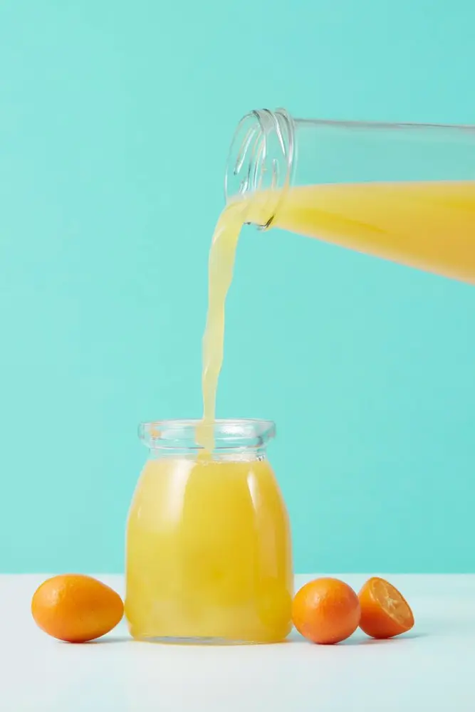
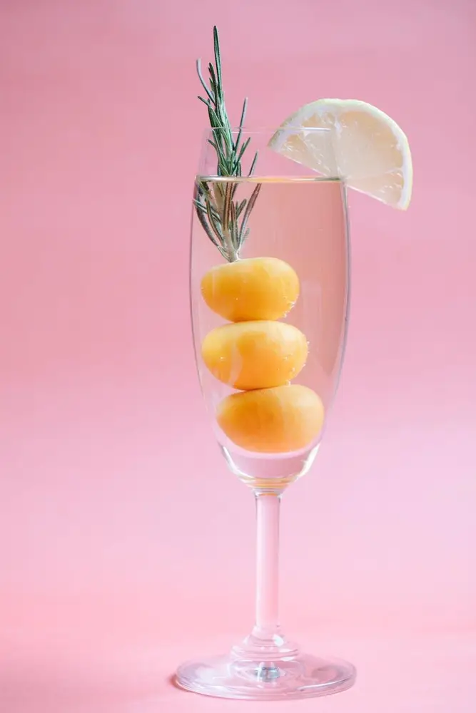

Articles / Recipes
How to make Kumquat Spritzer
2022-10-04 · News, Recipes

Original public content from Yen Chuan. Product claims and specifications remain subject to confirmation by the company.
Need a refreshing treat in autumn? Introducing our dazzling kumquat spritzer:
a bright and sunny drink featuring a fruity, fizzy experience!

Why Kumquats?
This drink is as reviving as a limeade, yet with the kumquats’ unique tangy, citrusy flair: A cross between lime and oranges, this vivid flavour is truly memorable!
The sweet, sour, and tangy punch from the tiny fruit, combined with the soda’s fizzling mouthfeel makes the perfect booze-free refreshment.
With its easy-to-follow instructions, the Kumquat Spritzer is the perfect pick-me-up and energy boost to enjoy anytime!
All you need is 2 ingredients and 2 minutes to spare, and you can enjoy this refreshing soda in no time at all. One sip will certainly bring you the vibes of a spring garden party!
In short, it’s the perfect companion for brunches, sipping at the patio, and more!
Want to give it a try? Follow those simple steps:

How to make Kumquat spritzer
A bright and sunny drink with a kumquat-filled, fizzy goodness!
What you’ll need
How to make
Fill glass with sparkling water
Pour in kumquat syrup and stir
Add ice cubes and stir
Tip: Garnish with a fresh mint sprig and kumquats as a colorful addition to this celebratory sparkling drink!
As you can see, the Kumquat Spritzer is super easy to make! Want to give it an extra kick? Try adding a splash of rum or tequila!
Why not give this refreshing beverage a try this autumn? Have a sip of this delicious drink and let your tastebuds decide!